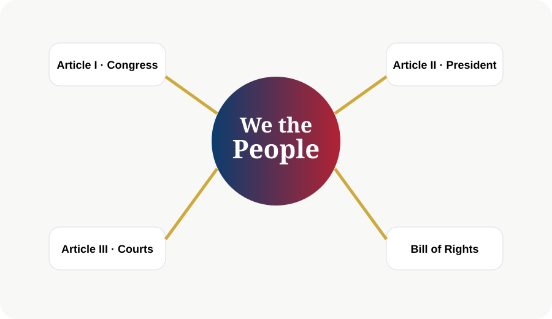

The United States Constitution
The Constitution is the blueprint for American government and the supreme law of the land.
Learning Objectives
- Understand the Preamble
- Describe the seven Articles
- Explain why amendments matter

The Constitution at a Glance
The Constitution contains the Preamble, seven Articles, and twenty-seven amendments. It creates the government, limits its powers, and protects liberty.
We the People
The opening words show that authority comes from the people, not a king. This idea is called popular sovereignty.
The Seven Articles
Article I creates Congress, Article II creates the Presidency, Article III creates the federal courts, Article IV explains the states, Article V explains amendments, Article VI establishes supremacy, and Article VII explains ratification.
A Living Framework
The Constitution has lasted because it sets durable principles while allowing change through amendments. It is stable but adaptable.

Chapter Summary
- The Constitution sets up and limits the government.
- The Preamble explains its purposes.
- Amendments allow change over time.
Key Terms
Constitution · Government · Rights · Citizenship · Federalism · Representation · Rule of Law
Review Questions
- What is the main idea of this chapter?
- How does this chapter connect to the Constitution?
- Why is this topic important for citizenship?
- Give one real-life example from this chapter.